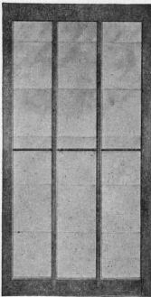

157. Sash
Description
This section is from the book "Vegetable Gardening", by Ralph L. Watts. Also available from Amazon: Vegetable Gardening.
157. Sash
The most durable wood should be used in making hotbed and cold frame sash. Cedar or cypress is usually employed. Many of the old sash now in use were made of white pine. However, it is a mistake to have sash made of the softer woods at local factories which do not make a specialty of this line of work. Sash differ greatly in width and length, but the standard and most popular size is 3 x 6 feet. Longer sash require wide frames which are inconvenient in the daily care of the plants. Sash vary also in thickness; 2-inch lumber when dressed makes a very strong sash, but it is more common to use 1 1/2-inch lumber, which planes down to 1 3/8. The lighter sash are easier to handle, while the heavier ones sustain less breakage from hard winds.
Fig. 19. sash for hotbed or cold frame.
Before purchasing sash, inquiry should be made regarding the type of construction. The joints should always be leaded before the parts are put together, and less moisture will be absorbed in the corners if the tenons do not extend through the side-bars. A light iron rod across the middle of the bars strengthens the sash and prevents spreading. (See Figure 19).
A priming coat of paint should be applied before glazing. It is always desirable to buy glass of good quality, although the cheaper grades are often used for this purpose. Some gardeners prefer to butt the glass. When this is done, grooves are cut in the sides of the sash-bars in which the glass slides; but unless the ends of the panes fit very closely there will be considerable leakage, for which reason lapping is more popular. The glass need not lap more than 1/8 inch. A 3 x 6-foot sash is usually made for three runs of 10 x 12-inch glass, requiring 18 panes for each sash. The glass is fastened by glazing points, and the putty or mastica is applied in the angles formed by the glass and the sash-bars. A better plan, although more tedious, is to lay the glass in putty. After glazing, the sash should again be painted, and the work repeated every year thereafter. When not in use they should be stored in the dry, or stacked. In the latter case several of the upper sash should be nailed together with vertical strips to prevent the wind from lifting and breaking them. If the glazing is done at home and glass bought in wholesale lots, the sash can be made in lots of 50 or more at a cost not exceeding $2.25 each.
Double-glass sash are also on the market. These possess advantages and also disadvantages. The advantages are: (1) Plants are afforded almost as thorough protection as with single glass covered with rye-straw mats, and in many parts of the country double sash should give all the protection needed by plants ordinarily grown in frames. (2) The labor in the management of the frames is reduced, because there are no mats to be handled morning and evening. (3) The plants receive the light during the entire day, because there are no mats at any time to obstruct it. (4) A growing temperature is reached earlier in the day, and is maintained longer, unless there is little or no sunshine.
Disadvantages that may be mentioned are: (1) Double-glass sash are much heavier to handle, and this is one of the greatest objections raised by men who handle sash by the hundreds. (2) They cost about one-third more.
(3) On account of the accumulation and retention of moisture between the two layers of glass, it is thought that the sash will not be so durable as single-glass sash.
(4) The two layers of glass and the accumulation of dirt and moisture between the panes reduce the amount of light entering the frames, and in consequence produce weaker plants. This new type of sash can be used to advantage for many purposes, although the single-glass type will doubtless continue to be popular in sections where hotbeds are used extensively. Oiled paper and special waterproof cloth are substituted for glass sometimes. Although less expensive, they lack durability and do not generally give as satisfactory results as glass sash.
Continue to:
Tags
plants, crops, gardening, cultivated, harvesting, food ,greenhouses, fertiliser, vegitables